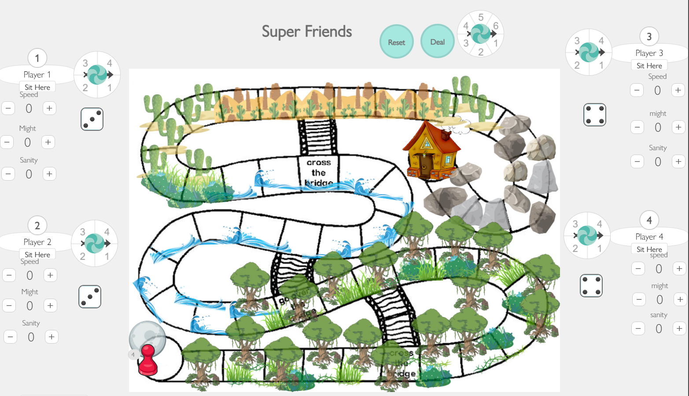

Portfolio
Present Time
In this piece I was creating a looping dream, have any of your dreams like that?
Parallel Space
In this piece I make two different video and with the same voice track, can you find out witch video from the original sound track?
SF in Google Map
This video is creat by real time recording, the idea I have is what if google street can be realtime maping? So I took this idea and make this in San Francisco
Rains
In this piece was using Algorithm. The Algorithm I choose is the NoiseWave, and I have this noise wave to make something like a water float. The project I make is a sence of raining and the water level got float up. The rain will being increase over time till the water float off the screen.
see codesee class1
see class2
My Self Portraits

This is my self-portrait with code only. Don't you think they look the same? Oh maybe without the headphone.
see code
Basic Game Form
This is the basic FPS(first-person shooter) game form, if you look back to the old school shooting games you will see some of the common.
see code
Family
This set of photo means a lot to me, that is my family member of course you can see on the title. Luckily we are being safe during the pandemic, every time comes back home that warms my heart up.
Lighting
I was having fun with the lighting on the Rubik's Cube. The lighting of a black and white photo was more contract with colors. Different light that hit on the cube has different out come.
Movement
What I am capturing is the water is freezing in the camera.
Place
What I want to give is the warm comfortble home feeling, light of hope, and the foor of horror.
Portrait
This is my litter sister and I am being creative for her fun photo taking, and she enjoyed and show out with all her friends.
Sence of Self
This set of photo is all about myslef, I was having a tough time to adapting college life, so I want to using photo to express my feeling.
Glitch Art
This set of glitch art is the most beautiful city in the world in my point of view, but overall this year all cities are being polluted and being cover-up by human factory-made objects.
2D Des and Color Concept
In this art making I have learn how to control of color paint using, and the abstract 2D design.
Super Friendz

This is the first board game I ever make, this is a fun party board game with teen.
Paper Prototype
RPG Game Character
The first Character in 2D I ever make, and the project is still in progress. You won't belive this is a Character from a medieval magic hero.